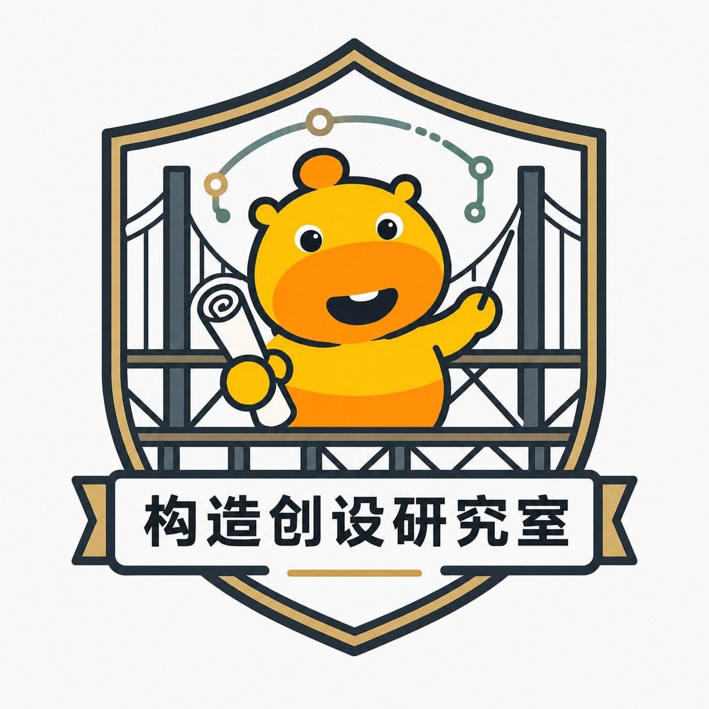

构造创设研究室主持国家自然科学基金青C、日本学术振兴会（JSPS）PD等纵向项目3项。以第一作者或通讯作者发表SCI/EI学术论文十余篇，其中代表性成果被 Advances in Engineering 遴选为 Key Scientific Article。授权国家专利十余项，其中发明专利7项。担任 Engineering Structures、Remote Sensing、Structural Health Monitoring 等国际SCI期刊审稿人。
| 2011.09 — 2015.06 | 南京工业大学，土木工程，工学学士 |
| 2015.09 — 2018.06 | 南京工业大学，桥梁与隧道工程，工学硕士 |
| 2019.04 — 2022.03 | 日本东北大学，土木工程，工学博士 |
| 2022.04 — 2023.03 | 日本东北大学，工学研究科，JSPS博士后特别研究员 |
| 2022.07 — 至今 | 南京工业大学，土木工程学院桥梁系，讲师 |
喜欢徒步与登山，热衷于探索自然风光；对酒文化颇有兴趣，尤其擅长白酒与啤酒品鉴。不喜欢重口味食物。